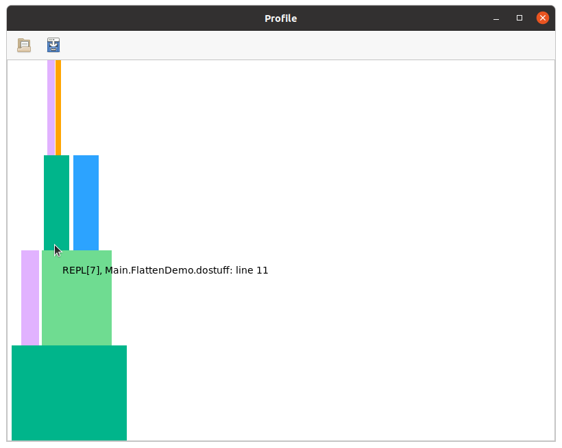

Snooping on inference: @snoopi_deep
@snoopi_deep is available on Julia 1.6.0-DEV.1190 or above, but the results can be relevant for all Julia versions.
Currently, precompile only caches results for type-inference, not other stages in code generation. For that reason, efforts at reducing latency should be informed by measuring the amount of time spent on type-inference. Moreover, because all code needs to be type-inferred before undergoing later stages of code generation, monitoring this "entry point" can give you an overview of the entire compile chain.
On older versions of Julia, @snoopi allows you to make fairly coarse measurements on inference; starting with Julia 1.6, the recommended tool is @snoopi_deep, which collects a much more detailed picture of type-inference's actions.
The rich data collected by @snoopi_deep are useful for several different purposes; on this page, we'll describe the basic tool and show how it can be used to profile inference. On later pages we'll show other ways to use the data to reduce the amount of type-inference or cache its results.
Collecting the data
Like @snoopr, @snoopi_deep is exported by both SnoopCompileCore and SnoopCompile, but in this case there is not as much reason to do the data collection by a very minimal package. Consequently here we'll just load SnoopCompile at the outset.
To see @snoopi_deep in action, we'll use the following demo:
module FlattenDemo
struct MyType{T} x::T end
extract(y::MyType) = y.x
function domath(x)
y = x + x
return y*x + 2*x + 5
end
dostuff(y) = domath(extract(y))
function packintype(x)
y = MyType{Int}(x)
return dostuff(y)
end
end
# output
FlattenDemoThe main call, packintype, stores the input in a struct, and then calls functions that extract the field value and performs arithmetic on the result. To profile inference on this call, we simply do the following:
julia> tinf = @snoopi_deep FlattenDemo.packintype(1)
InferenceTimingNode: 0.002712/0.003278 on Core.Compiler.Timings.ROOT() with 1 direct childrenInference gets called only on the first invocation of a method with those specific types. You have to redefine the FlattenDemo module (by just re-executing the command we used to define it) if you want to collect data with @snoopi_deep on the same code a second time.
To make it easier to perform these demonstrations and use them for documentation purposes, SnoopCompile includes a function SnoopCompile.flatten_demo() that redefines the module and returns tinf.
This may not look like much, but there's a wealth of information hidden inside tinf.
A quick check for potential invalidations
After running @snoopi_deep, it's generally recommended to check the output of staleinstances:
julia> staleinstances(tinf)
SnoopCompileCore.InferenceTiming[]If you see this, all's well. A non-empty list might indicate method invalidations, which can be checked (in a fresh session) by running the identical workload with @snoopr.
Rampant invalidation can make the process of analyzing tinf more confusing: "why am I getting reinference of this MethodInstance when I precompiled it?" Routine use of staleinstances at the beginning can save you some head-scratching later.
Your workload may load packages and/or (re)define methods; these can be sources of invalidation and therefore non-empty output from staleinstances. One trick that may circumvent some invalidation is to load the packages and make the method definitions before launching @snoopi_deep, because it ensures the methods are in place before your workload triggers compilation.
If you do have a lot of invalidations, precompile_blockers may be an effective way to reveal those invalidations that affect your particular package and workload.
Viewing the results
Let's start unpacking the output of @snoopi_deep and see how to get more insight. First, notice that the output is an InferenceTimingNode: it's the root element of a tree of such nodes, all connected by caller-callee relationships. Indeed, this particular node is for Core.Compiler.Timings.ROOT(), a "dummy" node that is the root of all such trees.
You may have noticed that this ROOT node prints with two numbers. It will be easier to understand their meaning if we first display the whole tree. We can do that with the AbstractTrees package:
julia> using AbstractTrees
julia> print_tree(tinf)
InferenceTimingNode: 0.002712/0.003278 on Core.Compiler.Timings.ROOT() with 1 direct children
└─ InferenceTimingNode: 0.000133/0.000566 on FlattenDemo.packintype(::Int64) with 2 direct children
├─ InferenceTimingNode: 0.000094/0.000094 on FlattenDemo.MyType{Int64}(::Int64) with 0 direct children
└─ InferenceTimingNode: 0.000089/0.000339 on FlattenDemo.dostuff(::FlattenDemo.MyType{Int64}) with 2 direct children
├─ InferenceTimingNode: 0.000064/0.000122 on FlattenDemo.extract(::FlattenDemo.MyType{Int64}) with 2 direct children
│ ├─ InferenceTimingNode: 0.000034/0.000034 on getproperty(::FlattenDemo.MyType{Int64}, ::Symbol) with 0 direct children
│ └─ InferenceTimingNode: 0.000024/0.000024 on getproperty(::FlattenDemo.MyType{Int64}, x::Symbol) with 0 direct children
└─ InferenceTimingNode: 0.000127/0.000127 on FlattenDemo.domath(::Int64) with 0 direct childrenThis tree structure reveals the caller-callee relationships, showing the specific types that were used for each MethodInstance. Indeed, as the calls to getproperty reveal, it goes beyond the types and even shows the results of constant propagation; the getproperty(::MyType{Int64}, x::Symbol) (note x::Symbol instead of just plain ::Symbol) means that the call was getproperty(y, :x), which corresponds to y.x in the definition of extract.
Generally we speak of call graphs rather than call trees. But because inference results are cached (a.k.a., we only "visit" each node once), we obtain a tree as a depth-first-search of the full call graph.
You can extract the MethodInstance with
julia> Core.MethodInstance(tinf)
MethodInstance for Core.Compiler.Timings.ROOT()
julia> Core.MethodInstance(tinf.children[1])
MethodInstance for FlattenDemo.packintype(::Int64)Each node in this tree is accompanied by a pair of numbers. The first number is the exclusive inference time (in seconds), meaning the time spent inferring the particular MethodInstance, not including the time spent inferring its callees. The second number is the inclusive time, which is the exclusive time plus the time spent on the callees. Therefore, the inclusive time is always at least as large as the exclusive time.
The ROOT node is a bit different: its exclusive time measures the time spent on all operations except inference. In this case, we see that the entire call took approximately 10ms, of which 9.3ms was spent on activities besides inference. Almost all of that was code-generation, but it also includes the time needed to run the code. Just 0.76ms was needed to run type-inference on this entire series of calls. As you will quickly discover, inference takes much more time on more complicated code.
We can also display this tree as a flame graph, using the ProfileView.jl package:
julia> fg = flamegraph(tinf)
Node(FlameGraphs.NodeData(ROOT() at typeinfer.jl:75, 0x00, 0:10080857))julia> using ProfileView
julia> ProfileView.view(fg)You should see something like this:

Users are encouraged to read the ProfileView documentation to understand how to interpret this, but briefly:
- the horizontal axis is time (wide boxes take longer than narrow ones), the vertical axis is call depth
- hovering over a box displays the method that was inferred
- left-clicking on a box causes the full
MethodInstanceto be printed in your REPL session - right-clicking on a box opens the corresponding method in your editor
- ctrl-click can be used to zoom in
- empty horizontal spaces correspond to activities other than type-inference
- any boxes colored red (there are none in this particular example, but you'll see some later) correspond to non-precompilable
MethodInstances, in which the method is owned by one module but the types are from another unrelated module. - any boxes colored orange-yellow (there is one in this demo) correspond to methods inferred for specific constants (constant propagation)
You can explore this flamegraph and compare it to the output from print_tree.
Finally, flatten, on its own or together with accumulate_by_source, allows you to get an sense for the cost of individual MethodInstances or Methods.
The tools here allow you to get an overview of where inference is spending its time. Sometimes, this information alone is enough to show you how to change your code to reduce latency: perhaps your code is spending a lot of time inferring cases that are not needed in practice and could be simplified. However, most efforts at latency reduction will probably leverage additional tools (described next) that help identify the main opportunities for intervention.